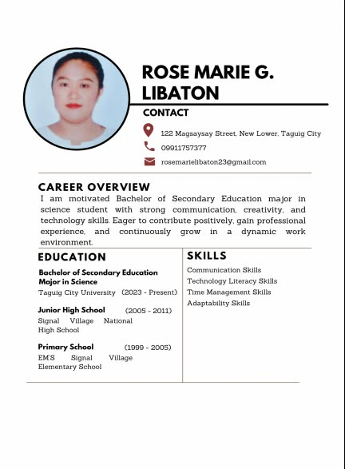
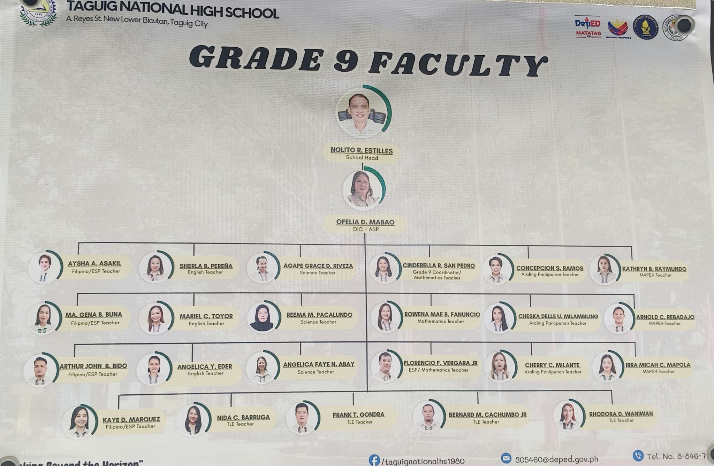
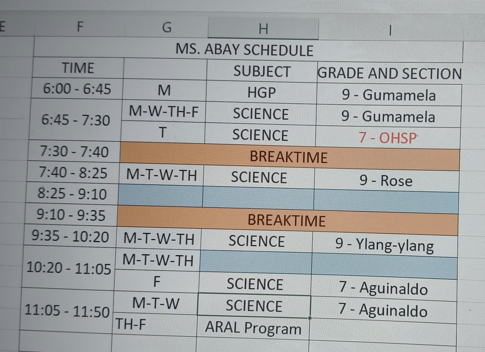
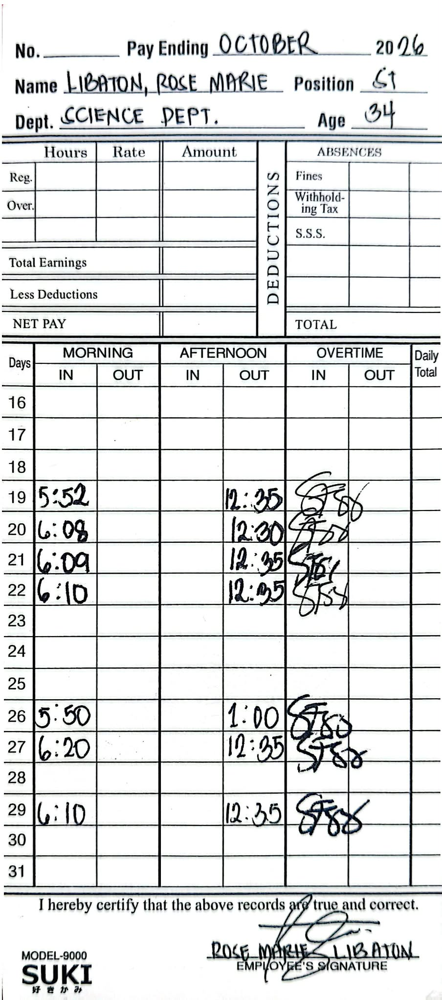
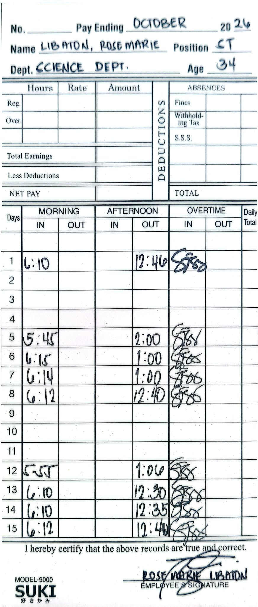
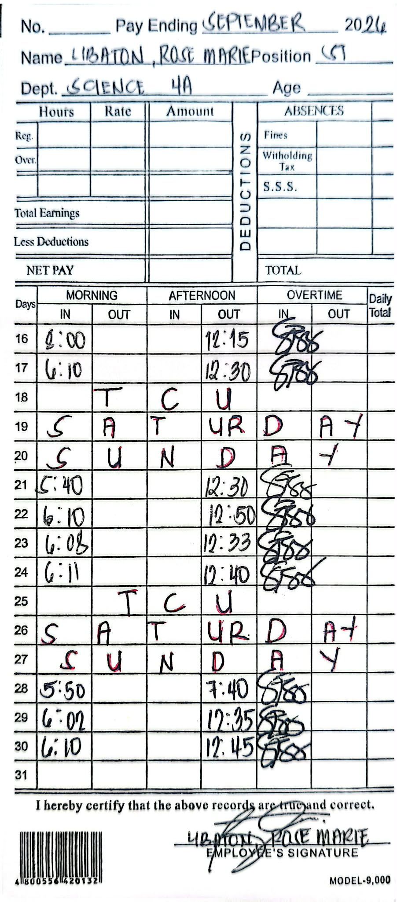
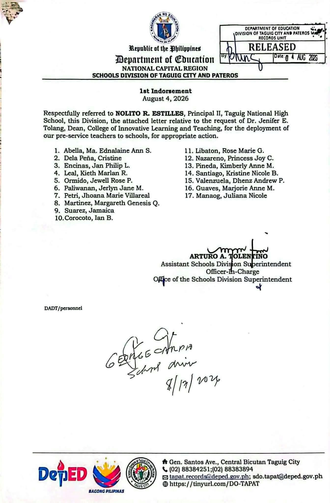

Field Study 1 and 2 E-Portfolio
Rose Marie G. Libaton · Bachelor of Secondary Education, Major in Science
Table of Contents
Welcome to my Field Study 1 and 2 e-portfolio. Choose a page below, or use the menu at the top.
1. Introduction
About this portfolio
This portfolio records my teaching internship at Taguig National High School, where I handle Grade 9 and Grade 7 students. Grade 7 learners are still adjusting to high school and need patience and clear routines. Grade 9 learners are more independent and ready for deeper discussion. Teaching both groups taught me to read the room and adjust my approach.
Preface
This e-portfolio shows my work, my honest reflections, and my growth as a future science teacher. Each section records the plans I tried, what I observed, and the conclusions I drew. I thank my cooperating teacher, my adviser, my school, my family, and my students, who taught me as much as I taught them.
2. Student Profile
Brief biography
Rose Marie is a student of Taguig City University, and she is proud to call Taguig City her hometown. She chose teaching because she believes that education is a powerful way to share knowledge, develop students’ abilities, and help them achieve their dreams. As a future educator, she wants not only to teach lessons but also to inspire her students to believe in themselves, continue learning, and become better individuals. She also hopes to inspire her fellow teachers and colleagues through her dedication, positive attitude, and willingness to learn. For her, teaching is more than a profession; it is an opportunity to make a meaningful difference in the lives of others.
Personal educational philosophy
I believe that students learn best in an environment where they feel safe, happy, respected, and supported. Every student has different abilities, needs, and ways of learning, so I believe that a teacher should create a classroom where everyone feels accepted, valued, and encouraged to participate. As a future educator, I aspire to be a kind, patient, and understanding teacher who listens to my students, acknowledges their feelings, and provides guidance whenever they face difficulties. I want my students to feel that their voices matter and that they can approach me without fear of being judged.
Above all, I want to make learning easier, more meaningful, and enjoyable by creating lessons that help students understand, grow, and believe in their own abilities. For me, being a good teacher is not only about sharing knowledge but also about making a positive difference in the lives of my students and helping them become confident, responsible, and compassionate individuals.
Career objectives
Short-term goal: My short-term goal is to enhance my science teaching skills by developing engaging, hands-on, and inquiry-based activities that encourage students to explore, ask questions, and understand scientific concepts in a safe and supportive learning environment.
Long-term goal: My long-term goal is to become a dedicated and inspiring science educator who nurtures students’ curiosity about the natural world, develops their critical-thinking and problem-solving skills, and helps them appreciate the importance of science in everyday life.
Curriculum vitae
Download my CV Open in a new tab

3. Learning Goals
Field Study 1: Observation
My Field Study 1 experience is an opportunity for me to learn and grow as a future science teacher. Through observing my cooperating teacher and students, I am learning that every learner is different and requires patience, understanding, and appropriate teaching strategies. This experience inspires me to become a teacher who makes learning meaningful and enjoyable while creating a classroom where students feel safe, heard, and encouraged to ask questions. I know I still have much to learn, and I am willing to use every experience to become a better educator.
Field Study 2: Participation
I expect to learn a lot from my cooperating teacher because I admire their teaching skills and dedication to helping students learn. I want to discover more teaching strategies and approaches that I can use to meet my students’ different learning needs, especially in science. Through this experience, I hope to become more confident, improve my teaching skills, and learn how to make lessons easier, more meaningful, and enjoyable for my students.
4. Cooperating School Profile
- Students learn in a child-friendly, gender-sensitive, safe, and motivating environment.
- Teachers facilitate learning and constantly nurture every learner.
- Administrators and staff, as stewards of the institution, ensure an enabling and supportive environment for effective learning.
- Families, communities, and other stakeholders are actively engaged and share responsibility for developing lifelong learners.
- Maka-Diyos: Having faith in God and practicing good moral values.
- Maka-tao: Showing respect, kindness, and concern for others.
- Makakalikasan: Caring for and protecting the environment.
- Makabansa: Loving the country and being a responsible Filipino citizen.
5. Weekly Documentation and Reflection
Week 1 · September 16–17
Week 2 · September 21–24
Week 3 · September 28 – October 1
Week 4 · October 5–8
Week 5 · October 12–15
Week 6 · October 19–22
Week 7 · October 26–29
6. Professional Development and Activities
Science Month science booth
Recognition ceremony, film showing, and raffle
Certificates
Certificates and proof of attendance from the activities I took part in. Click a certificate to open it.
 Science Month
Science Month Certificate: Committees
Certificate: Committees Certificate: Rose Marie G. Libaton
Certificate: Rose Marie G. LibatonOrganizational structure

School facilities


7. Professional Growth Action Plan
| Area for improvement | Action plan | Timeline | Expected outcome |
|---|---|---|---|
| Classroom Management | Observe experienced teachers and practice strategies to maintain students’ attention, encourage participation, and manage classroom behavior. | Throughout the teaching internship | Develop the ability to manage the classroom effectively and create a positive learning environment. |
| Teaching Strategies | Explore and apply different teaching methods, such as inquiry-based learning, group activities, and hands-on experiments, to make Science lessons more engaging. | Every teaching opportunity | Improve my ability to deliver lessons that are meaningful, interactive, and suitable for students’ learning needs. |
| Communication Skills | Practice giving clear instructions, explaining Science concepts in simple words, and communicating respectfully with students and teachers. | Throughout the internship | Become a more confident and effective communicator who can explain lessons clearly and build good relationships with students. |
| Confidence in Teaching | Participate actively in classroom discussions, facilitate student activities, and practice teaching whenever opportunities are available. | Throughout the teaching internship | Build confidence in handling classes, leading activities, and delivering Science lessons. |
| Assessment and Evaluation | Learn to prepare appropriate quizzes, worksheets, performance tasks, and rubrics to assess students’ understanding and progress. | During lesson preparation and teaching activities | Develop the skills to assess student learning fairly and identify areas where students need additional support. |
| Professionalism and Reflection | Reflect on my teaching experiences, accept constructive feedback from my cooperating teacher, and identify areas that need improvement. | Weekly throughout the internship | Become a responsible, reflective, and dedicated future educator who continuously works to improve teaching practices. |
8. Appendices
- Reflection
- Photo documentation
- Certificates and recognitions
- Observation forms
- Attendance records
- School forms (if permitted)
- Endorsement or acceptance letter (if applicable)
- Approved class or observation schedule
- Observation notes or field notes
- Feedback or evaluation forms
- Consent forms (if applicable)
9. Observation Schedule and Attendance Record
Observation schedule
My approved class and observation schedule at Taguig National High School.

Attendance record: Daily Time Record (DTR)
My attendance record for Field Study 1 and Field Study 2.



Endorsement letter
My endorsement letter for the field study at Taguig National High School.
